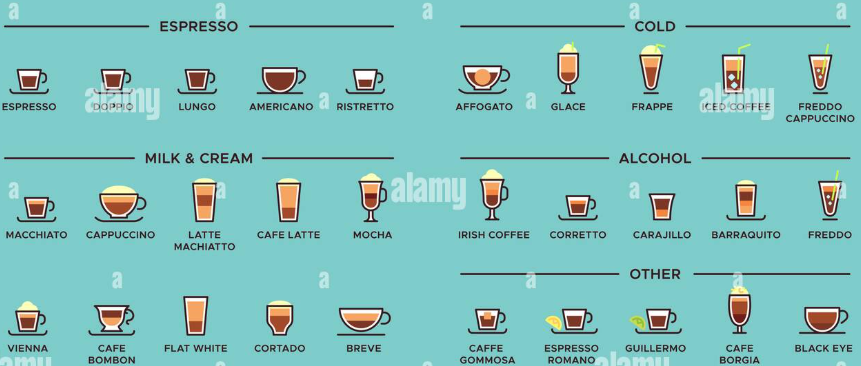
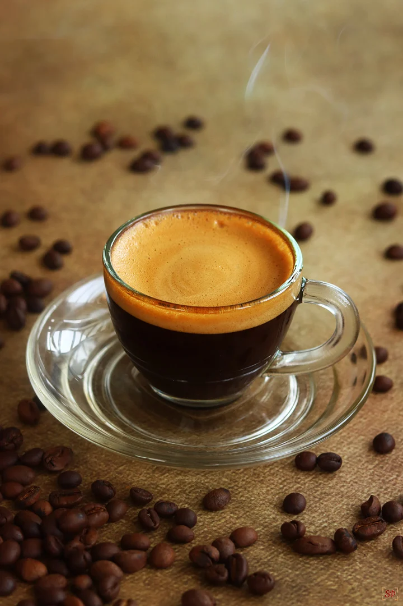

سلام من علیرضام. بیست و سه سال سن دارم تقریبا پنج سال هست که باریستا هستم از همون اول هم عاشق قهوه بودم و همین باعث شد که کافعین و قهوه یک بخش جدانشدنی از روز های من بشه. این صفحه هم برای معرفی چند تا نوشیدنی کافعین دار هست که میتونن انتخاب های مناسبی برای یک روز شلوق باشن یا حتی فقط برای بهتر شدن حال


اسپرسو عصاره خالص قهوه تحت فشار هست

همون اسپرسو هست با یک اسکوپ بستنی

اسپرسو و آب جوش

ترکیب اسپرسو و شیر

قهوه و شیر اما از لاته شیر کمتری داره و فوم شیر بیشتر هست

وانیل و کارامل با ترکیب شیر و اسپرسو
اگه میخوای بیشتر از نوشدنی های قهوه ببینی میتونی از اینجا ببینی
| نام | حجم نوشسدنی | میزان تلخی یا شیرینی |
|---|---|---|
| اسپرسو | 50mm | تلخ |
| آفوگاتو | 100mm | شیرین |
| آمریکانو | 300mm | تلخ |
| لاته | 300mm | ملایم |
| کپوچینو | 200mm | ملایم |
| کارامل ماکیاتو | 300mm | شیرین | مقدارکافعین | تمامی نوشیدنی ها یکسان هستند |
این هم الویت های خودم هست
و در آخر اانتخاب با شما هست